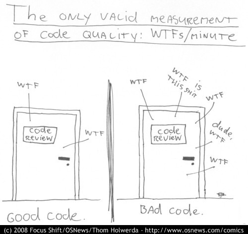

Sterowanie: spacja + shift-spacja || page down + page up || strzałki || esc
Without requirements or design, programming is the art of adding bugs to an empty text file.
Review Board determined that the omission of a hyphen in coded computer instructions in the data-editing program allowed transmission of incorrect guidance signals to the spacecraft.

If debugging is the process of removing software bugs, then programming must be the process of putting them in.
debug.py
fib.py
i = 0
fib = [0, 1]
fib[i-2] = 0
fib[i-1] = 1
i = 1
fib = [0, 1, 1]
fib[i-2] = 1
fib[i-1] = 0
i = 2
fib = [0, 1, 1, 1]
fib[i-2] = 0
fib[i-1] = 1
i = 3
fib = [0, 1, 1, 1, 1]
fib[i-2] = 1
fib[i-1] = 1
i = 4
fib = [0, 1, 1, 1, 1, 2]
fib[i-2] = 1
fib[i-1] = 1
i = 5
fib = [0, 1, 1, 1, 1, 2, 2]
fib[i-2] = 1
fib[i-1] = 1
i = 6
fib = [0, 1, 1, 1, 1, 2, 2, 2]
fib[i-2] = 1
fib[i-1] = 2
i = 7
fib = [0, 1, 1, 1, 1, 2, 2, 2, 3]
fib[i-2] = 2
fib[i-1] = 2
i = 8
fib = [0, 1, 1, 1, 1, 2, 2, 2, 3, 4]
fib[i-2] = 2
fib[i-1] = 2
i = 9
fib = [0, 1, 1, 1, 1, 2, 2, 2, 3, 4, 4]
fib[i-2] = 2
fib[i-1] = 3
[0, 1, 1, 1, 1, 2, 2, 2, 3, 4, 4, 5]fib.py
# więcej o plikach za chwilę
import sys
def read_data():
try:
plik = open('data.txt') # otwórz plik
linia = plik.readline() # wczytaj linię
dane = int(linia) # rzutuj linię na int
except IOError as err: # IOError
print("Błąd I/O:", err)
except ValueError as err: # ValueError
print("Złe dane:", err)
except: # InnyError
print("Coś poszło nie tak...")
sys.exit(0)assert_test.py
| Tryb | Opis |
|---|---|
| r | tylko do oczytu (domyślnie) |
| w | tylko do zapisu (istniejący plik zostanie nadpisany) |
| x | tylko do zapisu (plik nie może istnieć) |
| a | tylko do zapisu (od końca pliku) |
| + | aktualizowanie pliku (odczyt i zapis) |
| t | tryb tekstowy (domyślnie) |
| b | tryb binarny |
open(file, r+b) otwiera plik do odczytu, z możliwością zapisu, w trybie binarnymfile = open("test", "w") # tylko zapis
file.write("." * 5) # zapisz 5 kropek
zawartosc = file.read()
file.close()
print(zawartosc)UnsupportedOperation: not readable__enter__() (np. otwarcie pliku)__exit()__ (np. zamknięcie pliku)